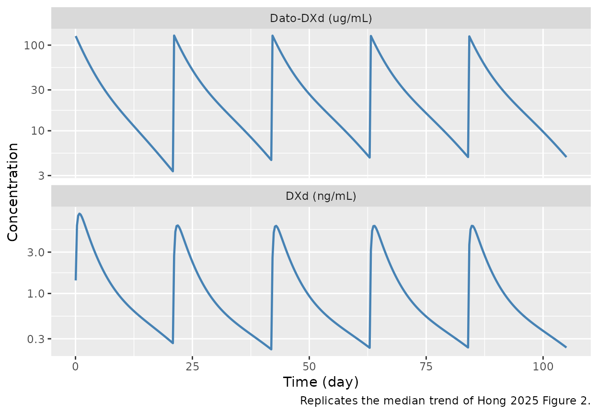
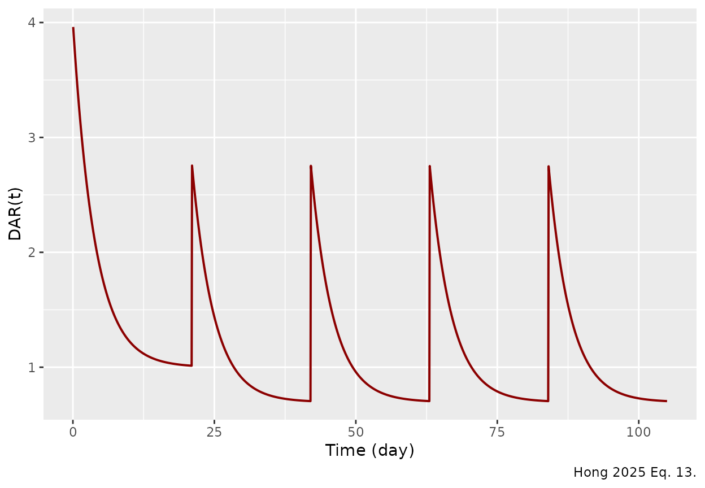
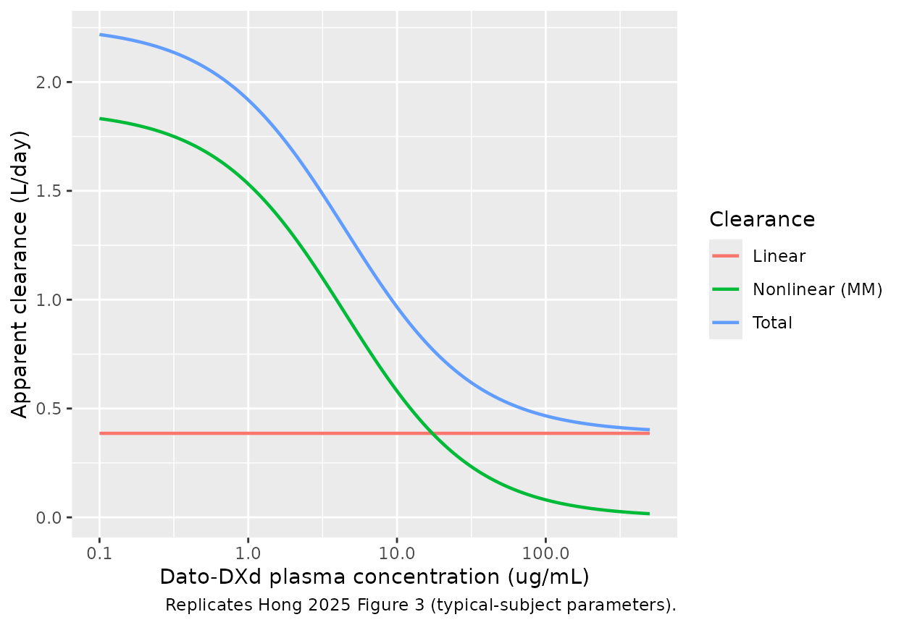
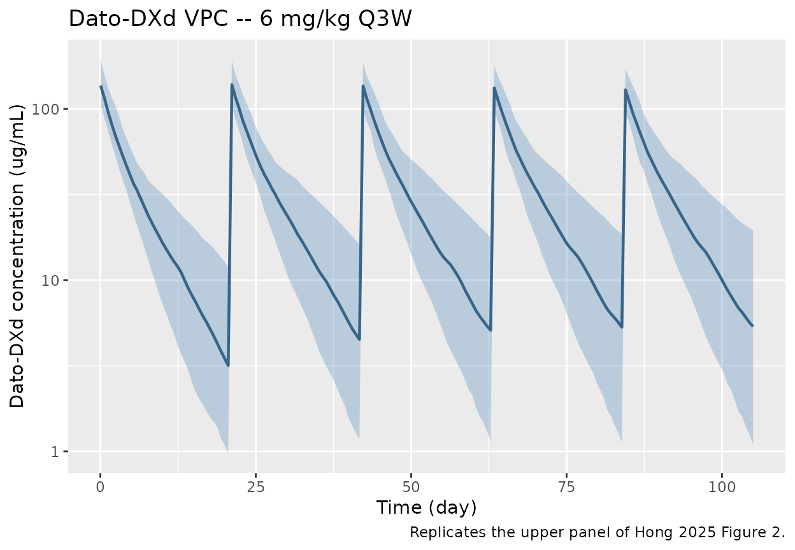
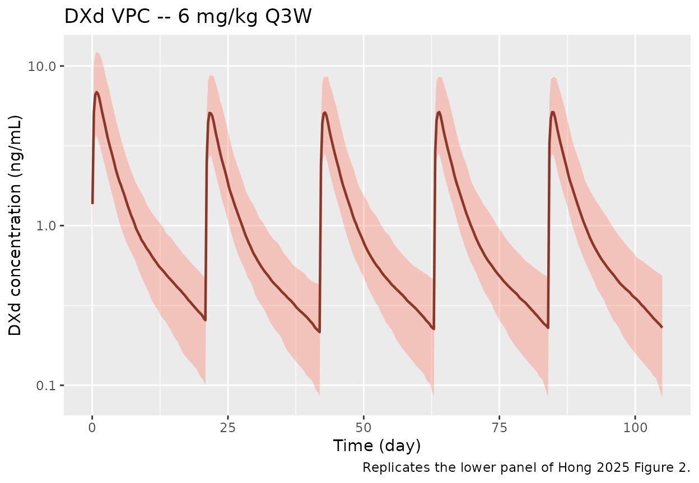
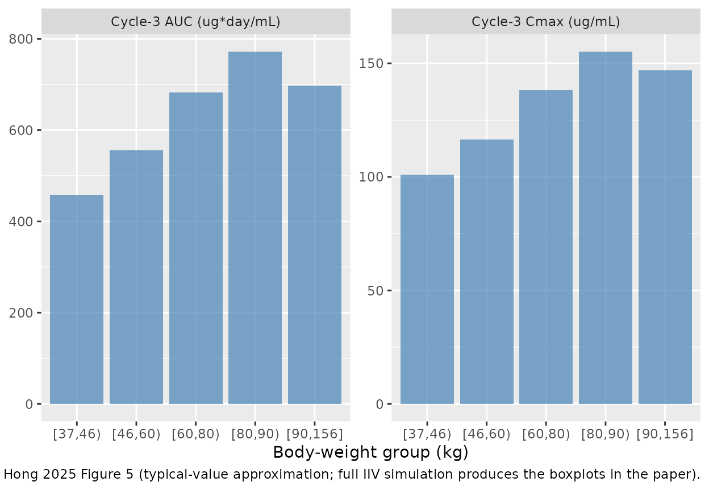

Datopotamab deruxtecan ADC + DXd coupled population PK model (Hong 2025)
Source:vignettes/articles/Hong_2025_datopotamab.Rmd
Hong_2025_datopotamab.Rmd
library(nlmixr2lib)
library(PKNCA)
#>
#> Attaching package: 'PKNCA'
#> The following object is masked from 'package:stats':
#>
#> filter
library(rxode2)
#> rxode2 5.0.2 using 2 threads (see ?getRxThreads)
#> no cache: create with `rxCreateCache()`
library(dplyr)
#>
#> Attaching package: 'dplyr'
#> The following objects are masked from 'package:stats':
#>
#> filter, lag
#> The following objects are masked from 'package:base':
#>
#> intersect, setdiff, setequal, union
library(tidyr)
library(ggplot2)Model and source
- Citation: Hong Y, Peigne S, Pan Y, Friberg Hietala S, McLaughlin A, Tajima N, Uema D, Zebger-Gong H, Tang Z, Zhou D, Abutarif M, Garimella T. Population Pharmacokinetic Analysis of Datopotamab Deruxtecan (Dato-DXd), a TROP2-Directed Antibody-Drug Conjugate, in Patients With Advanced Solid Tumors. CPT Pharmacometrics Syst Pharmacol. 2025;14(12):2149-2160.
- Article: https://doi.org/10.1002/psp4.70118 (PMID 41035281).
The model couples two submodels (paper Figure 1):
- Dato-DXd submodel – two-compartment with parallel linear and Michaelis-Menten elimination from the central compartment.
- DXd submodel – one-compartment with linear clearance. Its central compartment is fed at a rate equal to the total (linear + Michaelis-Menten) Dato-DXd elimination rate, scaled by the DXd-to-Dato-DXd molecular-weight ratio (493.5 / 150,000) and a time-and-cycle-dependent drug-to-antibody ratio DAR(tad, CYCLE).
DAR(tad, CYCLE) = 4 * (0.25 + 0.75 * exp(-beta * tad)) *
(1 if CYCLE = 1
Factor1 = 0.696 otherwise) (Hong 2025 Eq. 13)
rate_DXd_in = (CL_lin * C_DatoDXd + Vmax * C_DatoDXd / (Km + C_DatoDXd))
* DAR * (493.5 / 150000) (Hong 2025 Methods)tad is the time since the most recent dose;
CYCLE is the integer treatment-cycle number, set to 1 over
the first 21 days post-first-dose and incremented at each new Q3W dosing
cycle.
Concentrations are in mg/L (= ug/mL) for
both analytes inside the model; DXd is conventionally reported in
ng/mL and is rescaled outside the model
(Cc_dxd_ng_mL = Cc_dxd * 1000).
Population
Pooled analysis dataset (Hong 2025 Methods + Table S1):
- Studies: Phase 1 TROPION-PanTumor01 (TP01), Phase 2 TL05, Phase 3 TL01.
- Subjects: 729 patients with advanced or metastatic NSCLC and breast cancer.
- Observations: 9036 Dato-DXd PK observations + 9012 DXd PK observations.
- Body-weight range: 37.0 - 156 kg analysis range; reference 66 kg.
-
Reference subjects:
- Dato-DXd: 66 kg male, age 62 yr, albumin 38 g/L, tumor size 66 mm, region != Japan (Hong 2025 Figure 4 caption).
- DXd: 66 kg male, region US, albumin 38 g/L, AST 22 U/L, total bilirubin 0.4 mg/dL (Hong 2025 Figure 4 caption).
- Dose regimens: Phase 1 included a 0.27 - 10 mg/kg dose-escalation; Phase 2 / 3 used the labeled 6 mg/kg Q3W. The approved label (Datroway) caps the flat dose at 540 mg for body weight >= 90 kg.
mod <- rxode2::rxode(readModelDb("Hong_2025_datopotamab"))
#> ℹ parameter labels from comments will be replaced by 'label()'
str(mod$meta$population, max.level = 1)
#> List of 14
#> $ n_subjects : int 729
#> $ n_studies : int 3
#> $ age_range : chr "Adults with advanced or metastatic solid tumors (NSCLC and breast cancer); reference subject 62 years per Hong "| __truncated__
#> $ weight_range : chr "37.0 - 156 kg analysis range (Hong 2025 Methods / Body Weight-Based Dosing); reference 66 kg."
#> $ sex_female_pct : num NA
#> $ race_ethnicity : chr "Multi-regional enrollment including Japan, US, Europe, and Rest of the World; race per se was not retained as a"| __truncated__
#> $ disease_state : chr "Advanced or metastatic non-small-cell lung cancer (NSCLC) and breast cancer (BC)."
#> $ dose_range : chr "Dato-DXd IV every 3 weeks. Phase 1 TROPION-PanTumor01 (TP01) dose range 0.27 - 10 mg/kg; Phase 2 TL05 and Phase"| __truncated__
#> $ regions : chr "Multi-regional: Japan, US, Europe, and Rest of the World."
#> $ n_observations : chr "9036 Dato-DXd PK observations + 9012 DXd PK observations from 729 patients across three studies (Hong 2025 Methods)."
#> $ studies : chr "Phase 1 TROPION-PanTumor01 (TP01), Phase 2 TL05, and Phase 3 TL01."
#> $ reference_subject_dato_dxd: chr "66 kg male, age 62 years, albumin 38 g/L, tumor size 66 mm, region != Japan (Hong 2025 Figure 4 caption / Table 1 reference)."
#> $ reference_subject_dxd : chr "66 kg male, region US, albumin 38 g/L, AST 22 U/L, total bilirubin 0.4 mg/dL (Hong 2025 Figure 4 caption / Table 2 reference)."
#> $ notes : chr "Pooled analysis dataset (Hong 2025 Methods). Final model fit jointly to all 729 subjects across the 3 studies, "| __truncated__The covariates retained in the final model were body weight (mechanistic, on all four Dato-DXd structural parameters and DXd CL/Vc), albumin and age (on Dato-DXd CL_lin), region Japan (on Dato-DXd CL_lin), female sex (on Dato-DXd CL_lin and Vc; DXd Vc), tumor size (on Dato-DXd Vmax), albumin / AST / total bilirubin (on DXd CL), and region Europe / Rest of World (on DXd CL). ADA, race, creatinine clearance, drug product, and broad hepatic-impairment classifications were tested and excluded.
Source trace
Every ini() entry in
inst/modeldb/specificDrugs/Hong_2025_datopotamab.R carries
an in-file comment pointing to Hong 2025 Table 1, Table 2, or Equations
8-15. The table below collates them.
| Parameter (nlmixr2lib) | Value | Units | Source |
|---|---|---|---|
lcl -> CL_lin |
0.386 | L/day | Table 1, Eq. 8 |
lvc -> Vc |
3.06 | L | Table 1, Eq. 9 |
lq -> Q |
0.422 | L/day | Table 1 |
lvp -> Vp |
2.88 | L | Table 1, Eq. 10 |
lvmax -> Vmax |
8.41 | mg/day | Table 1, Eq. 12 (8410 ug/day) |
lkm -> Km |
4.49 | mg/L | Table 1, Eq. 11 (4490 ng/mL) |
e_wt_cl |
0.75 (fixed) | - | Table 1 |
e_wt_vc |
0.415 | - | Table 1 |
e_wt_vp |
0.311 | - | Table 1 |
e_age_cl |
-0.306 | - | Table 1 |
e_alb_cl |
-0.788 | - | Table 1 |
e_japan_cl |
-0.219 | - | Table 1 |
e_sexf_cl |
-0.263 | - | Table 1 |
e_sexf_vc |
-0.160 | - | Table 1 |
e_tumsz_vmax |
0.125 | - | Table 1, Eq. 12 |
lcl_dxd -> CL_DXd |
63.84 | L/day | Table 2, Eq. 14 (2.66 L/h * 24) |
lvc_dxd -> Vc_DXd |
25.1 | L | Table 2, Eq. 15 |
lfactor1 -> Factor1 |
0.696 | - | Table 2, Eq. 13 |
lbeta -> beta |
0.259 | 1/day | Table 2, Eq. 13 |
e_wt_cl_dxd |
0.298 (fixed) | - | Table 2 |
e_wt_vc_dxd |
0.530 (fixed) | - | Table 2 |
e_alb_cl_dxd |
0.343 | - | Table 2 |
e_ast_cl_dxd |
-0.154 | - | Table 2 |
e_tbili_cl_dxd |
-0.139 | - | Table 2 |
e_eu_cl_dxd |
0.240 | - | Table 2 |
e_row_cl_dxd |
0.196 | - | Table 2 |
e_sexf_vc_dxd |
-0.185 | - | Table 2 |
propSd |
0.121 | fraction | Table 1 (additive RUV log scale) |
propSd_dxd |
0.283 | fraction | Table 2 (additive RUV log scale) |
Inter-individual variability (log-normal; omega^2 = log(CV^2 + 1)):
| Parameter | %CV | omega^2 | Source |
|---|---|---|---|
| CL_lin | 27.2 | 0.071375 | Table 1 |
| Vc | 14.5 | 0.020807 | Table 1 |
| Q | 31.1 | 0.092325 | Table 1 |
| Vp | 31.2 | 0.092893 | Table 1 |
| Vmax | 19.2 | 0.036201 | Table 1 |
| CL_DXd | 31.4 | 0.094033 | Table 2 |
| Vc_DXd | 36.3 | 0.123782 | Table 2 |
Virtual cohort
Match the reference-subject covariates and the labeled dosing regimen (6 mg/kg Q3W, 540 mg flat-dose cap for body weight >= 90 kg):
set.seed(20260427L)
n_subj <- 200L
cycle_dy <- 21
n_cycles <- 5L
wt <- exp(rnorm(n_subj, mean = log(66), sd = 0.20))
wt <- pmin(pmax(wt, 37), 156)
sexf <- rbinom(n_subj, 1, 0.50)
age <- pmax(20, pmin(85, rnorm(n_subj, mean = 62, sd = 11)))
alb <- pmax(20, pmin(50, rnorm(n_subj, mean = 38, sd = 4)))
ast <- pmax(8, pmin(80, rnorm(n_subj, mean = 22, sd = 6)))
tbili <- pmax(0.1, pmin(2, rlnorm(n_subj, log(0.4), 0.4)))
tumsz <- pmax(10, pmin(200, rlnorm(n_subj, log(66), 0.5)))
region <- sample(c("US", "JP", "EU", "RoW"), n_subj, replace = TRUE,
prob = c(0.45, 0.20, 0.20, 0.15))
make_subject <- function(id, wt_kg, sexf_ind, age_y, alb_g_L, ast_U_L,
tbili_mg_dL, tumsz_mm, reg) {
dose_mg <- min(6 * wt_kg, 540) # 6 mg/kg Q3W with 540 mg flat-dose cap
doses <- rxode2::et() |>
rxode2::et(amt = dose_mg, cmt = "central", ii = cycle_dy,
addl = n_cycles - 1L, time = 0)
obs <- rxode2::et(seq(0.05, n_cycles * cycle_dy, length.out = 420),
cmt = "Cc")
ev <- rbind(doses, obs)
ev$id <- id
ev$WT <- wt_kg
ev$AGE <- age_y
ev$SEXF <- sexf_ind
ev$ALB <- alb_g_L
ev$AST <- ast_U_L
ev$TBILI <- tbili_mg_dL
ev$TUMSZ <- tumsz_mm
ev$REGION_JAPAN <- as.integer(reg == "JP")
ev$REGION_EUROPE <- as.integer(reg == "EU")
ev$REGION_ROW <- as.integer(reg == "RoW")
ev$CYCLE <- pmax(1L, as.integer(floor(ev$time / cycle_dy) + 1L))
ev$dose_mg <- dose_mg
ev
}
events <- purrr::map_dfr(seq_len(n_subj),
~ make_subject(.x, wt[.x], sexf[.x], age[.x], alb[.x], ast[.x],
tbili[.x], tumsz[.x], region[.x])) |>
as.data.frame()
stopifnot(length(unique(events$id)) == n_subj)Typical-subject simulation
Single typical-subject curve (66 kg male, age 62, albumin 38 g/L, AST 22 U/L, total bilirubin 0.4 mg/dL, tumor 66 mm, region US, 6 mg/kg Q3W, 5 cycles) with all between-subject and residual variability turned off:
typ <- readModelDb("Hong_2025_datopotamab") |> rxode2::zeroRe()
#> ℹ parameter labels from comments will be replaced by 'label()'
typ_events <- rxode2::et() |>
rxode2::et(amt = 6 * 66, cmt = "central", ii = cycle_dy,
addl = n_cycles - 1L, time = 0) |>
rxode2::et(seq(0.05, n_cycles * cycle_dy, length.out = 1500), cmt = "Cc")
typ_events$WT <- 66
typ_events$AGE <- 62
typ_events$SEXF <- 0
typ_events$ALB <- 38
typ_events$AST <- 22
typ_events$TBILI <- 0.4
typ_events$TUMSZ <- 66
typ_events$REGION_JAPAN <- 0
typ_events$REGION_EUROPE <- 0
typ_events$REGION_ROW <- 0
typ_events$CYCLE <- pmax(1L, as.integer(floor(typ_events$time / cycle_dy) + 1L))
typ_sim <- rxode2::rxSolve(typ, typ_events, returnType = "data.frame") |>
mutate(
Cc_ug_mL = Cc, # mg/L = ug/mL already
Cc_dxd_ng_mL = Cc_dxd * 1000 # mg/L -> ng/mL
)
#> ℹ omega/sigma items treated as zero: 'etalcl', 'etalvc', 'etalq', 'etalvp', 'etalvmax', 'etalcl_dxd', 'etalvc_dxd'
typ_sim |>
tidyr::pivot_longer(c(Cc_ug_mL, Cc_dxd_ng_mL),
names_to = "analyte", values_to = "conc") |>
mutate(analyte = recode(analyte,
Cc_ug_mL = "Dato-DXd (ug/mL)",
Cc_dxd_ng_mL = "DXd (ng/mL)")) |>
ggplot(aes(time, conc)) +
geom_line(colour = "steelblue", linewidth = 0.8) +
facet_wrap(~ analyte, ncol = 1, scales = "free_y") +
scale_y_log10() +
labs(x = "Time (day)", y = "Concentration",
caption = "Replicates the median trend of Hong 2025 Figure 2.")
Typical-subject Dato-DXd (top, ug/mL) and DXd (bottom, ng/mL) concentration-time profiles for a 66 kg male reference patient receiving 6 mg/kg Q3W for 5 cycles. Replicates the median trend of Hong 2025 Figure 2 (upper / lower panels).
typ_sim |>
ggplot(aes(time, dar)) +
geom_line(colour = "darkred", linewidth = 0.7) +
labs(x = "Time (day)", y = "DAR(t)",
caption = "Hong 2025 Eq. 13.")
Internal DAR(t) trajectory across five cycles for the typical subject. DAR resets at each dose (4 in cycle 1; 4 * 0.696 = 2.78 in cycles 2 onwards) and decays toward DAR0 * 0.25 in cycle 1 (= 1) and DAR0 * 0.25 * 0.696 in later cycles (= 0.696).
Linear vs nonlinear elimination across the dose range
The paper’s Figure 3 visualizes the contributions of CL_lin and CL_nonlin to total Dato-DXd clearance versus the typical-subject Dato-DXd plasma concentration. We replicate that plot from the typical-value parameters:
cl_grid <- tibble(
C_ug_mL = exp(seq(log(0.1), log(500), length.out = 200)),
CL_lin = 0.386,
rate_lin = CL_lin * C_ug_mL,
rate_mm = 8.41 * C_ug_mL / (4.49 + C_ug_mL),
CL_nonlin = rate_mm / C_ug_mL,
CL_total = CL_lin + CL_nonlin,
pct_nl = 100 * CL_nonlin / CL_total
)
ggplot(cl_grid, aes(C_ug_mL, CL_total)) +
geom_line(aes(colour = "Total"), linewidth = 0.8) +
geom_line(aes(C_ug_mL, CL_lin, colour = "Linear"), linewidth = 0.8) +
geom_line(aes(C_ug_mL, CL_nonlin, colour = "Nonlinear (MM)"), linewidth = 0.8) +
scale_x_log10() +
labs(x = "Dato-DXd plasma concentration (ug/mL)",
y = "Apparent clearance (L/day)",
colour = "Clearance",
caption = "Replicates Hong 2025 Figure 3 (typical-subject parameters).")
Typical-subject Dato-DXd linear, nonlinear, and total clearance (left axis) and percentage nonlinear (right axis) versus Dato-DXd plasma concentration. Replicates the qualitative message of Hong 2025 Figure 3: CL_lin dominates above ~50 ug/mL while nonlinear MM clearance dominates at sub-therapeutic concentrations.
Population (VPC-style) simulation
Full population simulation with all between-subject variability and residual error preserved.
mod <- readModelDb("Hong_2025_datopotamab")
pop_sim <- rxode2::rxSolve(mod, events,
keep = c("WT", "SEXF", "CYCLE", "dose_mg"),
returnType = "data.frame") |>
mutate(
Cc_ug_mL = Cc,
Cc_dxd_ng_mL = Cc_dxd * 1000
)
#> ℹ parameter labels from comments will be replaced by 'label()'
pop_sim |>
group_by(time) |>
summarise(
p05 = quantile(Cc_ug_mL, 0.05, na.rm = TRUE),
p50 = quantile(Cc_ug_mL, 0.50, na.rm = TRUE),
p95 = quantile(Cc_ug_mL, 0.95, na.rm = TRUE),
.groups = "drop"
) |>
ggplot(aes(time, p50)) +
geom_ribbon(aes(ymin = p05, ymax = p95), fill = "steelblue", alpha = 0.3) +
geom_line(colour = "steelblue4", linewidth = 0.8) +
scale_y_log10() +
labs(x = "Time (day)", y = "Dato-DXd concentration (ug/mL)",
title = "Dato-DXd VPC -- 6 mg/kg Q3W",
caption = "Replicates the upper panel of Hong 2025 Figure 2.")
VPC-style 5/50/95th-percentile ribbon of simulated Dato-DXd concentrations vs time across 200 virtual subjects on 6 mg/kg Q3W (540 mg flat-dose cap >= 90 kg) for 5 cycles. Reproduces the Dato-DXd panel of Hong 2025 Figure 2.
pop_sim |>
group_by(time) |>
summarise(
p05 = quantile(Cc_dxd_ng_mL, 0.05, na.rm = TRUE),
p50 = quantile(Cc_dxd_ng_mL, 0.50, na.rm = TRUE),
p95 = quantile(Cc_dxd_ng_mL, 0.95, na.rm = TRUE),
.groups = "drop"
) |>
ggplot(aes(time, p50)) +
geom_ribbon(aes(ymin = p05, ymax = p95), fill = "tomato", alpha = 0.3) +
geom_line(colour = "tomato4", linewidth = 0.8) +
scale_y_log10() +
labs(x = "Time (day)", y = "DXd concentration (ng/mL)",
title = "DXd VPC -- 6 mg/kg Q3W",
caption = "Replicates the lower panel of Hong 2025 Figure 2.")
VPC-style 5/50/95th-percentile ribbon of simulated DXd concentrations vs time across the same 200 virtual subjects. Reproduces the DXd panel of Hong 2025 Figure 2; cycle-1 to later-cycle scaling reflects the DAR Factor1 = 0.696 step.
PKNCA validation
Per-cycle NCA on the simulated typical-subject (no IIV) curves – the paper reports relative metrics (R_ac for AUC, Cmax, Ctrough) rather than absolute single-cycle Cmax / AUC values, so the validation target is the cycle-1 to cycle-3 ratio and the qualitative ordering between cycles.
typ_nca_input <- typ_sim |>
filter(time > 0) |>
mutate(
cycle = pmax(1L, as.integer(floor((time - 1e-9) / cycle_dy) + 1L)),
time_in_cycle = time - (cycle - 1) * cycle_dy
) |>
filter(cycle <= n_cycles) |>
mutate(treatment = "Dato-DXd 6 mg/kg Q3W") |>
transmute(id = 1L, treatment, cycle = as.factor(cycle),
time = time_in_cycle, Cc = Cc_ug_mL, Cc_dxd = Cc_dxd_ng_mL)
dose_typ <- tibble(
id = 1L,
treatment = "Dato-DXd 6 mg/kg Q3W",
cycle = factor(seq_len(n_cycles)),
time = 0,
amt = 6 * 66
)
intervals_q3w <- data.frame(
start = 0,
end = cycle_dy,
cmax = TRUE,
tmax = TRUE,
auclast = TRUE
)
adc_nca <- PKNCA::pk.nca(PKNCA::PKNCAdata(
PKNCA::PKNCAconc(typ_nca_input, Cc ~ time | treatment + id/cycle),
PKNCA::PKNCAdose(dose_typ, amt ~ time | treatment + id + cycle),
intervals = intervals_q3w
))
#> Warning: Requesting an AUC range starting (0) before the first measurement
#> (0.05) is not allowed
#> Warning: Requesting an AUC range starting (0) before the first measurement
#> (0.0540027) is not allowed
#> Warning: Requesting an AUC range starting (0) before the first measurement
#> (0.0580053) is not allowed
#> Warning: Requesting an AUC range starting (0) before the first measurement
#> (0.062008) is not allowed
#> Warning: Requesting an AUC range starting (0) before the first measurement
#> (0.0660107) is not allowed
adc_nca_summary <- summary(adc_nca)
dxd_nca <- PKNCA::pk.nca(PKNCA::PKNCAdata(
PKNCA::PKNCAconc(typ_nca_input, Cc_dxd ~ time | treatment + id/cycle),
PKNCA::PKNCAdose(dose_typ, amt ~ time | treatment + id + cycle),
intervals = intervals_q3w
))
#> Warning: Requesting an AUC range starting (0) before the first measurement
#> (0.05) is not allowed
#> Warning: Requesting an AUC range starting (0) before the first measurement
#> (0.0540027) is not allowed
#> Warning: Requesting an AUC range starting (0) before the first measurement
#> (0.0580053) is not allowed
#> Warning: Requesting an AUC range starting (0) before the first measurement
#> (0.062008) is not allowed
#> Warning: Requesting an AUC range starting (0) before the first measurement
#> (0.0660107) is not allowed
dxd_nca_summary <- summary(dxd_nca)
adc_nca_summary
#> start end treatment cycle N auclast cmax tmax
#> 0 21 Dato-DXd 6 mg/kg Q3W 1 1 NC 128 0.0500
#> 0 21 Dato-DXd 6 mg/kg Q3W 2 1 NC 131 0.0540
#> 0 21 Dato-DXd 6 mg/kg Q3W 3 1 NC 132 0.0580
#> 0 21 Dato-DXd 6 mg/kg Q3W 4 1 NC 132 0.0620
#> 0 21 Dato-DXd 6 mg/kg Q3W 5 1 NC 132 0.0660
#>
#> Caption: auclast, cmax: geometric mean and geometric coefficient of variation; tmax: median and range; N: number of subjects
dxd_nca_summary
#> start end treatment cycle N auclast cmax tmax
#> 0 21 Dato-DXd 6 mg/kg Q3W 1 1 NC 8.34 0.820
#> 0 21 Dato-DXd 6 mg/kg Q3W 2 1 NC 6.06 0.824
#> 0 21 Dato-DXd 6 mg/kg Q3W 3 1 NC 6.04 0.828
#> 0 21 Dato-DXd 6 mg/kg Q3W 4 1 NC 6.06 0.832
#> 0 21 Dato-DXd 6 mg/kg Q3W 5 1 NC 6.07 0.836
#>
#> Caption: auclast, cmax: geometric mean and geometric coefficient of variation; tmax: median and range; N: number of subjectsCycle 1 to cycle 3 accumulation comparison
adc_pp <- as.data.frame(adc_nca$result) |>
filter(PPTESTCD %in% c("auclast", "cmax")) |>
mutate(analyte = "Dato-DXd")
dxd_pp <- as.data.frame(dxd_nca$result) |>
filter(PPTESTCD %in% c("auclast", "cmax")) |>
mutate(analyte = "DXd")
rac_tbl <- bind_rows(adc_pp, dxd_pp) |>
group_by(analyte, PPTESTCD, cycle) |>
summarise(value = median(PPORRES, na.rm = TRUE), .groups = "drop") |>
pivot_wider(names_from = cycle, values_from = value,
names_prefix = "cycle_") |>
mutate(R_ac_3 = cycle_3 / cycle_1)
knitr::kable(
rac_tbl,
digits = c(NA, NA, 3, 3, 3, 3, 3, 2),
caption = "Cycle-1 vs cycle-3 NCA metrics for the typical subject. Hong 2025 Results report R_ac (AUC) < 1.2 and R_ac (Cmax) ~ 1 at 6 mg/kg Q3W. Differences > 20% would indicate a structural problem with the model and would be investigated rather than tuned away."
)| analyte | PPTESTCD | cycle_1 | cycle_2 | cycle_3 | cycle_4 | cycle_5 | R_ac_3 |
|---|---|---|---|---|---|---|---|
| DXd | auclast | NA | NA | NA | NA | NA | NA |
| DXd | cmax | 8.339 | 6.061 | 6.044 | 6.061 | 6.066 | 0.72 |
| Dato-DXd | auclast | NA | NA | NA | NA | NA | NA |
| Dato-DXd | cmax | 127.586 | 130.754 | 131.806 | 132.003 | 131.955 | 1.03 |
Body-weight-based dose-cap simulation
Hong 2025 Figure 5 evaluates the 540 mg flat-dose cap above 90 kg by simulating WT subgroups [37,46), [46,60), [60,80), [80,90), [90,156] kg. We replicate the Cmax3 and AUC3 boxplots for cycle 3 (using the typical covariate vector, no IIV):
wt_groups <- tibble(
group = factor(c("[37,46)", "[46,60)", "[60,80)", "[80,90)", "[90,156]"),
levels = c("[37,46)", "[46,60)", "[60,80)", "[80,90)",
"[90,156]")),
wt_med = c(42, 53, 70, 85, 110)
)
simulate_typ_wt <- function(wt_kg) {
dose_mg <- if (wt_kg >= 90) 540 else 6 * wt_kg
ev <- rxode2::et() |>
rxode2::et(amt = dose_mg, cmt = "central", ii = cycle_dy,
addl = 2L, time = 0) |> # 3 cycles total
rxode2::et(seq(0.05, 3 * cycle_dy, length.out = 1000), cmt = "Cc")
ev$WT <- wt_kg
ev$AGE <- 62
ev$SEXF <- 0
ev$ALB <- 38
ev$AST <- 22
ev$TBILI <- 0.4
ev$TUMSZ <- 66
ev$REGION_JAPAN <- 0
ev$REGION_EUROPE <- 0
ev$REGION_ROW <- 0
ev$CYCLE <- pmax(1L, as.integer(floor(ev$time / cycle_dy) + 1L))
out <- rxode2::rxSolve(typ, ev, returnType = "data.frame") |>
filter(time > 2 * cycle_dy & time <= 3 * cycle_dy) |>
summarise(
auc3 = sum(diff(time) * (head(Cc, -1) + tail(Cc, -1)) / 2),
cmax3 = max(Cc, na.rm = TRUE)
)
out$wt_kg <- wt_kg
out$dose <- dose_mg
out
}
wt_sim <- purrr::map_dfr(wt_groups$wt_med, simulate_typ_wt) |>
left_join(wt_groups, by = c("wt_kg" = "wt_med"))
#> ℹ omega/sigma items treated as zero: 'etalcl', 'etalvc', 'etalq', 'etalvp', 'etalvmax', 'etalcl_dxd', 'etalvc_dxd'
#> ℹ omega/sigma items treated as zero: 'etalcl', 'etalvc', 'etalq', 'etalvp', 'etalvmax', 'etalcl_dxd', 'etalvc_dxd'
#> ℹ omega/sigma items treated as zero: 'etalcl', 'etalvc', 'etalq', 'etalvp', 'etalvmax', 'etalcl_dxd', 'etalvc_dxd'
#> ℹ omega/sigma items treated as zero: 'etalcl', 'etalvc', 'etalq', 'etalvp', 'etalvmax', 'etalcl_dxd', 'etalvc_dxd'
#> ℹ omega/sigma items treated as zero: 'etalcl', 'etalvc', 'etalq', 'etalvp', 'etalvmax', 'etalcl_dxd', 'etalvc_dxd'
wt_sim |>
pivot_longer(c(auc3, cmax3), names_to = "metric", values_to = "value") |>
mutate(metric = recode(metric,
auc3 = "Cycle-3 AUC (ug*day/mL)",
cmax3 = "Cycle-3 Cmax (ug/mL)")) |>
ggplot(aes(group, value)) +
geom_col(fill = "steelblue", alpha = 0.7) +
facet_wrap(~ metric, scales = "free_y") +
labs(x = "Body-weight group (kg)", y = NULL,
caption = "Replicates Hong 2025 Figure 5 (typical-value approximation; full IIV simulation produces the boxplots in the paper).")
Cycle-3 Dato-DXd AUC (left) and Cmax (right) by weight subgroup using typical-value parameters. Subjects in the >= 90 kg group receive the 540 mg cap. Replicates the qualitative message of Hong 2025 Figure 5: cap-vs-mg/kg dosing yields broadly similar exposures across subgroups.
Assumptions and deviations
-
Coupled parent + payload in one model file. The
paper presents a single joint analysis with two interconnected
sub-models (Dato-DXd two-compartment ADC, DXd one-compartment payload).
We extract them together in
Hong_2025_datopotamab.R, mirroring the Li 2017 brentuximab precedent. -
Concentration units mg/L (= ug/mL) for both
analytes. Dato-DXd is conventionally reported in
ug/mLand DXd inng/mL. Inside the ODE, both are integrated inmg/L. The vignette converts DXd tong/mLafter solve. - CL_DXd unit conversion. Hong 2025 Table 2 reports CL_DXd as 2.66 L/h; the model file stores it as 2.66 * 24 = 63.84 L/day so that every clearance / rate constant in the ODE is on the day timescale (matching beta = 0.259 /day, the cycle-dosing interval, and Dato-DXd CL_lin = 0.386 L/day). The abstract reports CL_DXd as 2.66 L/day; this is a unit typo in the abstract – a half-life of 6.5 days is implausible for the small-molecule payload DXd, whereas 2.66 L/h gives a half-life of ~6.5 h consistent with the published exatecan congener. The Table 2 / Eq. 14 unit (L/h) is treated as authoritative.
-
AST unit clarification. The Methods text reports
the AST reference value as
22 g/L; this is implausible for a transaminase activity (normal range ~10-40 U/L; 22 g/L would be a higher concentration than total serum albumin). The reference numeric value 22 is consistent with the canonical clinical-PK unit U/L (= IU/L), and that is what we use. The parameter point estimatee_ast_cl_dxd = -0.154is unaffected by the unit label. - No IIV on Dato-DXd Q (CL-Vc covariance). Hong 2025 Tables 1 / 2 do not report a correlation block for any pair of structural parameters; every IIV term is implemented as a diagonal omega.
-
No eta on the residual error (RUV). Paper Eq. 3
places an exponential IIV on the RUV magnitude with %CV reported as
IIV RUVin Tables 1 and 2. nlmixr2’s residual-error model does not accept a subject-level random effect on the SD, so this term is omitted from the implementation; the reported additive-on-log-scale SD (which equals proportional-in-linear- space SD) is used as the typical-subject residual SD. This will under- reproduce the tails of the residual distribution but match the median. - Region-grouping discrepancy between Dato-DXd and DXd CL covariates. Hong 2025 evaluates Dato-DXd CL with reference = “any region != Japan” (so REGION_JAPAN = 1 implies the -0.219 fractional shift) but DXd CL with reference = “US or Japan” (so REGION_JAPAN does not enter the DXd CL expression at all – Japan is grouped with US for the DXd reference). The model file uses the three indicators REGION_JAPAN, REGION_EUROPE, REGION_ROW with US as the implicit reference (all three = 0); REGION_JAPAN enters the Dato-DXd CL term only and not the DXd CL term, faithfully reproducing the paper’s parameterization.
-
Cycle covariate.
CYCLEis a 1-based integer treatment cycle counter (1 in days [0, 21), 2 in [21, 42), and so on for Q3W dosing). The DAR equation readsfactor_dar = 1in cycle 1 andfactor_dar = 0.696thereafter, implemented with aniftest so the simulation user must populateCYCLE >= 1for every observation row. -
tad()tracks time since the most recent dose. Within the first 21 days post-first-dose,tad()increases monotonically from 0; at the next dose it resets to 0 again. The DAR equation therefore decays during each cycle and reverts to 4 (cycle 1) or 4 * 0.696 = 2.78 (cycles 2+) at each new dose. -
No bioavailability term. Dato-DXd is administered
IV; doses are written directly into
centraland there is nodepotcompartment. -
Population metadata. Median age, median weight, sex
distribution, and per-region patient counts are not enumerated in the
publicly-available trimmed text used during extraction; the
populationblock reports the pooled-cohort summary directly cited (n = 729, 3 studies, 9036 + 9012 observations) and notes the omissions inpopulation$notes. The virtual-cohort weight distribution is anchored to the reference 66 kg with log-normal sigma 0.20 to span ~37 - 156 kg.
Errata
No published erratum or correction was located for PMID 41035281 as of 2026-04-27 (PubMed metadata and the journal landing page carry no correction-notice link). The items below are implementation-level notational inconsistencies in the source paper that the extraction had to resolve; they do not affect the final-model parameter point estimates.
-
Abstract vs Table 2 / Eq. 14: CL_DXd units. The
abstract reports CL_DXd as
2.66 L/day; Table 2 and Eq. 14 report the same numerical value as2.66 L/h. The Table 2 / Eq. 14 unit (L/h) is consistent with the small-molecule disposition of DXd (half-life ~5-7 h) and with the exatecan congener cited in the Discussion; the abstract value is interpreted as a typographical error. -
Methods text: AST unit label
g/L. The Methods reference value for AST is given as22 g/L. AST is an enzyme activity reported in U/L (= IU/L); the canonical AST unit perinst/references/covariate-columns.mdis U/L. The numerical value 22 is consistent with U/L only. -
DAR equation typesetting. Equation 1 / Equation 13
uses a piecewise inline notation for the
Factor1-vs-1 cycle scaling that flattens ambiguously in plain-text extracts. The MathML in the source XML resolves it as4 * (0.25 + 0.75 * exp(-beta * tad)) * (1 if cycle 1 else Factor1)– the cycle scaling multiplies the entire DAR(t) curve.